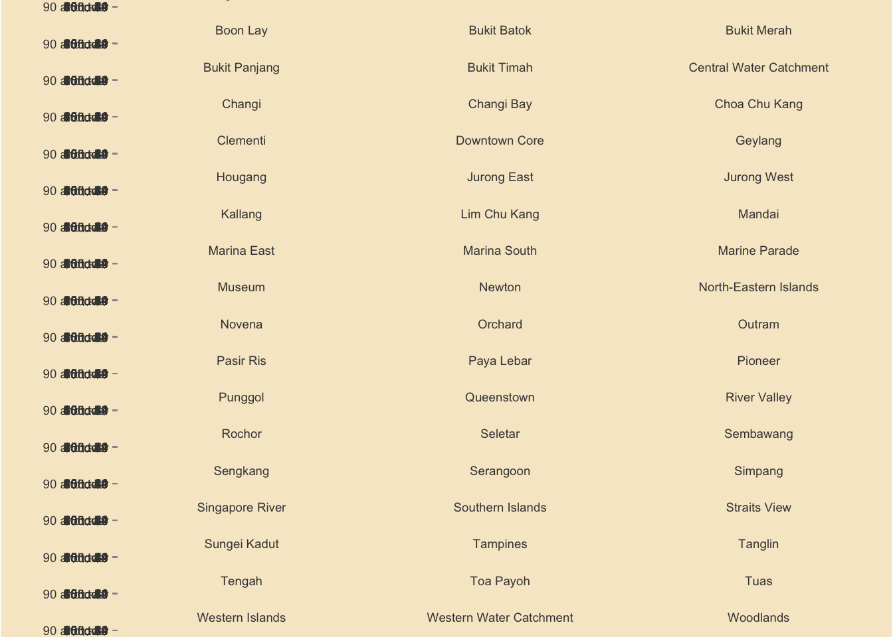

pacman::p_load(tidyverse,ggplot2,knitr, plotly, skimr, questionr, funModeling, sf, tmap, quanteda, NLP)Data Visualization Makeover 02
Critique of Singapore Age-Sex Pyramid
Objective
The objective of this exercise is to critique and improve an Age-Sex Pyramid Analytic Visualization of Singapore of the year 2022. The output is to recreate a Trellis Chart Age-Sex Pyramid through R-Studios by using ggplot2, ggplot2 extensions and tidyverse packages.
The visualization is created using the Singapore Residents by Planning Area / Sub-zone, Age Group, Sex and Type of Dwelling, June 2022 (Singstat).
Note
The output should be focused as a static Trellis Chart without filter interactivity.
Original Visualization and Critique
The Original Visualization Source: https://public.tableau.com/app/profile/joseph.zexeong.tan/viz/SingaporePopulationPyramindJun2022v1_3/trel3x3_d?publish=yes

Clarity
The Original Visualization shows 2 separate Age-Pyramid Trellis Chart that shows the same message. Two sets of visualization normally indicate that they visualize two different messages that may it be independent of each other or connected. The issue with the dashboard is that both sets indicate the same message just in a different format. This raises either confusion to the reader and a form of redundancy that can be best allocated to something else.
3x3 Trellis Chart limits the visualization to only 9 Age-Sex Pyramids. Limited and focused visualizations are normally selected under a criteria. This criteria may be in terms of highest population cumulative or selective. The original visualization shows no indication of the criteria chosen to only visualize 9 areas and may only be concluded as a random selection.
3x3 Trellis Chart lacks y-axis labels. Taking to consideration that the Trellis Charts is a stand alone visualization, the lack of y-axis label reduces the clarity of the y-axis values. Furthermore, both Trellis Charts lack x-axis values and labels but make up for it through text values per bar. In terms of clarity, one can argue that the lack of x-axis may confuse the reader due to the text values having no reference while others say the taxt vales are enough to compensate the lack of x-axis.
Aesthetic
Text Values center bar alignment makes reading the values difficult. Due to the mismatched alignment of the text values brought abut by the central alignment placement in the bar chart makes reading the values difficult as the reader cannot simply scroll down and read the values, not mention creates unnecessary confusion in the graph.
Text Values on each Bar Chart overwhelms the visualization. More than the mismatch alignment, the number of the text values in the chart saturates the charts and makes it “noisy”. The text values fill the dashboard with a lot of numbers that is makes the labels and visuals difficult to look at and interpret.
Horizontally arranged Trellis Chart limits and squeezes the Age-Sex Pyramids. This visualization arrangement artificially contorts the bar length due to the lack of width space. The squeeze minimizes the visual differentiation between bar charts as such creates an illusion that some bars are of the same size.
Getting Started - Data Loading and Processing
Installing and loading the required libraries
Before we get started, it is important for us to ensure that the required R packages have been installed.
Importing Data
This code chunk is to import the data from respopagesextod2022.csv file to the Quarto/R page.
pop_data <- read_csv("data/respopagesextod2022.csv")Rows: 100928 Columns: 7
── Column specification ────────────────────────────────────────────────────────
Delimiter: ","
chr (5): PA, SZ, AG, Sex, TOD
dbl (2): Pop, Time
ℹ Use `spec()` to retrieve the full column specification for this data.
ℹ Specify the column types or set `show_col_types = FALSE` to quiet this message.The CSV File contains the following columns:
| COLUMN NAME | DATA TYPE | DESCRIPTION |
|---|---|---|
| Planning Area (PA) | Character | Distinct Planning Areas in Singapore designated and mapped by the Government of Singapore |
| Subzone (SZ) | Character | Sub-areas within each Planning Areas |
| Age Group (AG) | Character | Sets of population age group by 5 (ex 0-4, 5-9, etc) |
| Sex | Character | Binary biological identifier of gender |
| Type of Dwelling (TOD) | Character | Available dwelling types in Sinagpore |
| Population (Pop) | Numerical | Population per category |
| Time | Numerical | Year -> 2022 |
Data Exploration and Cleaning
This section is to check incorrect and missing values in the data set.
skimr::skim(pop_data)| Name | pop_data |
| Number of rows | 100928 |
| Number of columns | 7 |
| _______________________ | |
| Column type frequency: | |
| character | 5 |
| numeric | 2 |
| ________________________ | |
| Group variables | None |
Variable type: character
| skim_variable | n_missing | complete_rate | min | max | empty | n_unique | whitespace |
|---|---|---|---|---|---|---|---|
| PA | 0 | 1 | 4 | 23 | 0 | 55 | 0 |
| SZ | 0 | 1 | 4 | 29 | 0 | 332 | 0 |
| AG | 0 | 1 | 6 | 11 | 0 | 19 | 0 |
| Sex | 0 | 1 | 5 | 7 | 0 | 2 | 0 |
| TOD | 0 | 1 | 6 | 39 | 0 | 8 | 0 |
Variable type: numeric
| skim_variable | n_missing | complete_rate | mean | sd | p0 | p25 | p50 | p75 | p100 | hist |
|---|---|---|---|---|---|---|---|---|---|---|
| Pop | 0 | 1 | 40.44 | 125.73 | 0 | 0 | 0 | 20 | 2300 | ▇▁▁▁▁ |
| Time | 0 | 1 | 2022.00 | 0.00 | 2022 | 2022 | 2022 | 2022 | 2022 | ▁▁▇▁▁ |
Create Age-Sex Pyramid
This section explores the creation of an Age-Sex Pyramid.
Exploration of y-axis Data
Exp1 <- pop_data %>%
filter(PA == "Ang Mo Kio") %>%
group_by(AG, Sex) %>%
summarise(pop = sum(`Pop`), n = n()) %>%
ungroup()`summarise()` has grouped output by 'AG'. You can override using the `.groups`
argument.ggplot(data = Exp1,
aes(y = AG)) +
geom_bar() +
theme_bw() +
ggtitle("Test: Age Group Distribution") 
Based on the y-axis (Age Group), 2 issues are noticed:
Each Age Group is written with an underscore (“_”) instead of a space in between each word/number
The values are organized alphabetically with consideration of the starting value (number or alphabet). As such “5_to_9” came before “45_to_49”
Correcting Age Labels
pop_data$AG <- gsub("_", " ", pop_data$AG, fixed = TRUE)Correcting Sequence
age_correct <- c("0 to 4", "5 to 9", "10 to 14", "15 to 19", "20 to 24", "25 to 29", "30 to 34", "35 to 39", "40 to 44", "45 to 49", "50 to 54", "55 to 59", "60 to 64", "65 to 69", "70 to 74", "75 to 79", "80 to 84", "85 to 89", "90 and over")
pop_sg <- pop_data %>%
group_by(AG, Sex) %>%
summarise(`count_pop` = sum(`Pop`)) %>%
mutate(AG = factor(AG, levels = age_correct)) %>%
arrange(AG) %>%
ungroup()`summarise()` has grouped output by 'AG'. You can override using the `.groups`
argument.pop_sg <- pop_sg %>%
mutate(pct = scales::percent((count_pop/sum(count_pop)), accuracy = 0.01),
res = str_c(count_pop, ", ", pct))
pop_pa <- pop_data %>%
group_by(PA, AG, Sex) %>%
summarise(`count_pop` = sum(`Pop`)) %>%
mutate(AG = factor(AG, levels = age_correct)) %>%
arrange(AG) %>%
ungroup()`summarise()` has grouped output by 'PA', 'AG'. You can override using the
`.groups` argument.pop_pa <- pop_pa %>%
mutate(pct = scales::percent((count_pop/sum(count_pop)), accuracy = 0.01),
res = str_c(count_pop, ", ", pct))Creating a Age-Sex Pyramid
This section explores the visualization of an Age-Sex Pyramid.
Note
This section will be using the total Singapore data (cummulative of all Planning Area)
SG_Pyr <- ggplot(pop_sg,
aes(x = ifelse(Sex == "Males",
yes = count_pop*(-1),
no = count_pop),
y = AG,
fill = Sex)) +
geom_col() +
scale_x_continuous(limits = c(-170000, 170000),
breaks = seq(-200000, 200000, 50000),
labels = paste0(
as.character(
c(seq(200, 0, -50),
seq(50, 200, 50))),
"k")) +
scale_y_discrete(expand = expansion(mult = c(0, 0.01))) +
labs (x = "Count of Population",
y = "Age Group",
fill = "Gender",
title = "Singapore Population Pyramid 2022",
subtitle = "Distribution of gender and age groups",
caption = "Data Source : Singstat.gov.sg, June 2022") +
theme_bw() +
theme(plot.title = element_text(size = 14,
colour = "#424242",
face = "bold",
hjust = 0.5),
plot.subtitle = element_text(size = 8,
colour = "#424242",
hjust = 0.5),
plot.caption = element_text(size = 5,
colour = "#424242",
hjust = 0),
axis.ticks = element_line(colour = "#424242",
linewidth = 0.1),
axis.title.y = element_text(angle = 0,
size = 8,
colour = "#424242",
face = "bold",
vjust = 1.05,
hjust = 1,
margin = margin(r = -40, l = 10)),
axis.title.x = element_text(size = 8,
colour = "#424242",
face = "bold"),
axis.text.x = element_text(size = 7,
colour = "#424242"),
axis.text.y = element_text(size = 7,
colour = "#424242"),
legend.position = "bottom",
legend.justification = "left",
legend.text = element_text(size = 7,
colour = "#424242"),
legend.title = element_text(size = 8,
colour = "#424242"),
panel.grid.major = element_line(linewidth = rel(0.5)),
panel.grid.minor = element_blank(),
plot.background = element_rect(fill = "#ffffff"),
legend.background = element_rect(fill = "#ffffff"),
legend.margin = margin(t = -10),
panel.border = element_rect(colour = "#424242",
linewidth = 0.3))
SG_Pyr
Creating A Trellis Age-Sex Pyramid
This section explores the visualization of an Age-Sex Pyramid within a Trellis Chart. Each Pyramid indicates per Planning Area.
PA_Pyr <- ggplot() +
geom_bar(data = subset(pop_pa,
Sex == "Males"),
aes(x = AG,
y = -count_pop,
fill = PA),
stat = "identity",
fill = "#FFA319FF") +
geom_bar(data = subset(pop_pa,
Sex == "Females"),
aes(x = AG,
y = count_pop,
fill = PA),
stat = "identity",
fill = "#302f2f") +
coord_flip() +
scale_fill_manual(
values = c("Males" = "#FFA319FF",
"Females" = "#302f2f"),
breaks = c("Males", "Females")) +
facet_wrap(.~ PA,
drop = FALSE,
ncol = 3,
scales = "fixed") +
scale_y_continuous(limits = c(-13000, 13000),
expand = expansion(mult = c(0, .04))) +
labs (y = "Count of Population",
x = "Age Group",
fill = "Gender",
title = "Singapore Population Pyramid 2022",
subtitle = "Distribution of gender and age groups",
caption = "Data Source : Singstat.gov.sg, June 2022") +
theme_bw() +
theme(plot.title = element_text(size = 14,
colour = "#302f2f",
face = "bold",
hjust = 0.5),
plot.subtitle = element_text(size = 8,
colour = "#424242",
face = "italic",
hjust = 0.5),
plot.caption = element_text(size = 8,
colour = "#424242",
hjust = 0),
strip.text = element_text(size = 7,
colour = "#424242"),
strip.background = element_blank(),
axis.ticks = element_line(colour = "#969595",
linewidth = 0.3),
axis.ticks.x = element_blank(),
axis.title.y = element_text(angle = 0,
size = 8,
colour = "#302f2f",
vjust = 1.07,
hjust = 0.8,
margin = margin(r = -40, l = 20)),
axis.title.x = element_text(size = 8,
colour = "#302f2f"),
axis.text.x = element_blank(),
axis.text.y = element_text(size = 7,
colour = "#424242"),
legend.position = "bottom",
legend.justification = "left",
legend.text = element_text(size = 7,
colour = "#424242"),
legend.title = element_text(size = 8,
colour = "#302f2f"),
panel.grid.major = element_line(linewidth = rel(0.5)),
panel.grid.major.x = element_blank(),
panel.grid.minor = element_blank(),
plot.background = element_rect(fill = "#f7e9cd"),
legend.background = element_rect(fill = "#f7e9cd"),
legend.margin = margin(t = -10),
panel.border = element_rect(colour = "#969595",
linewidth = 0.3))
PA_Pyr